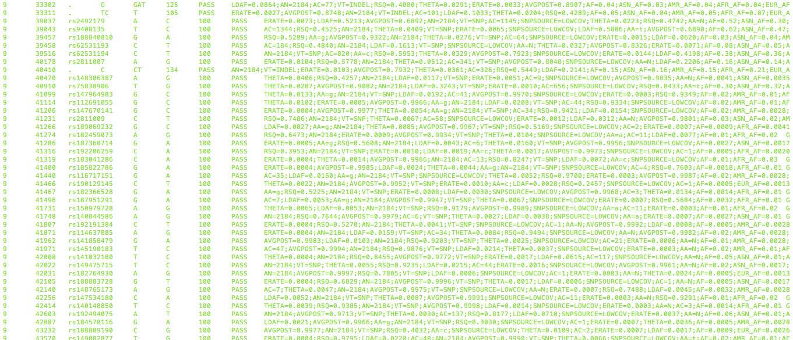
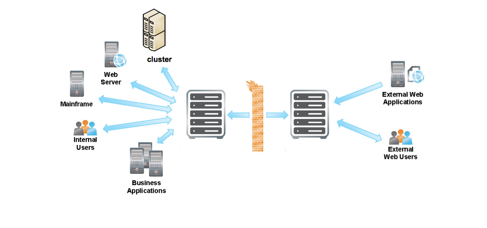
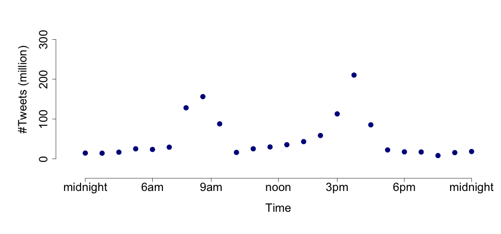
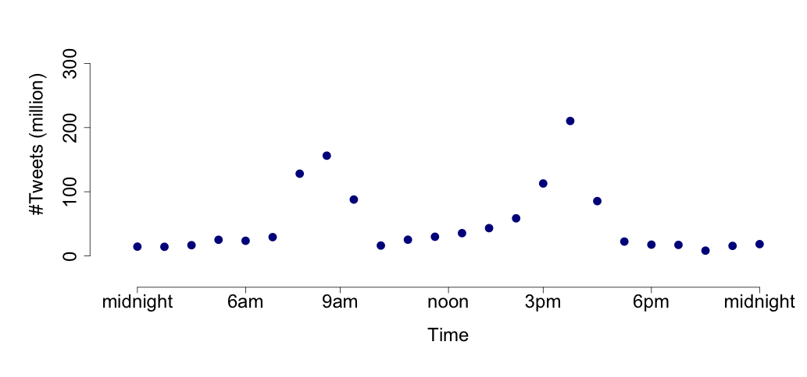
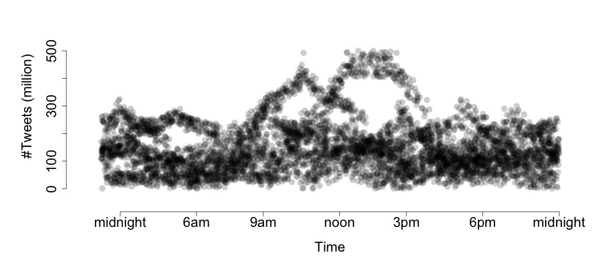
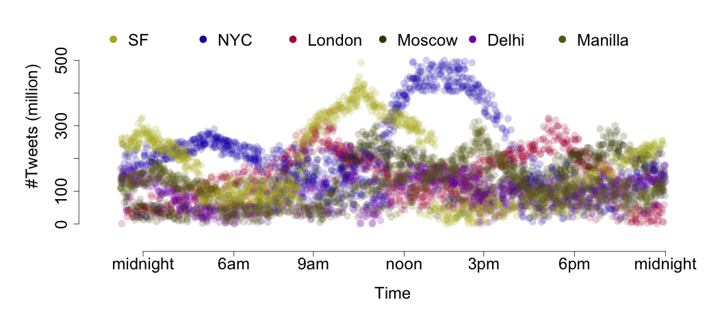
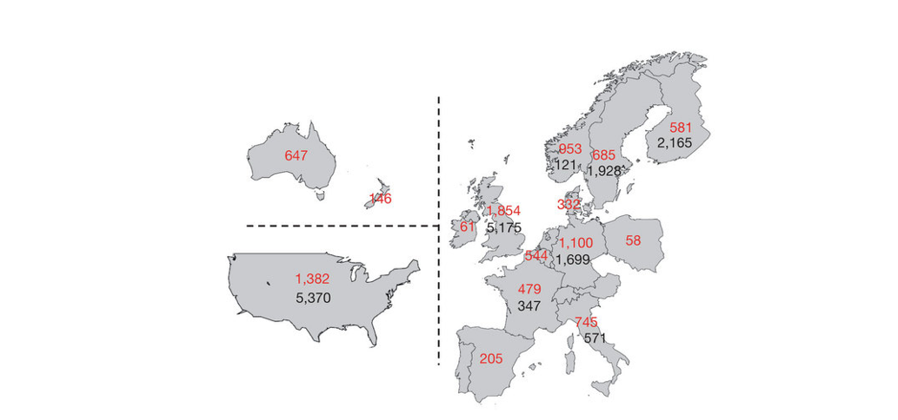
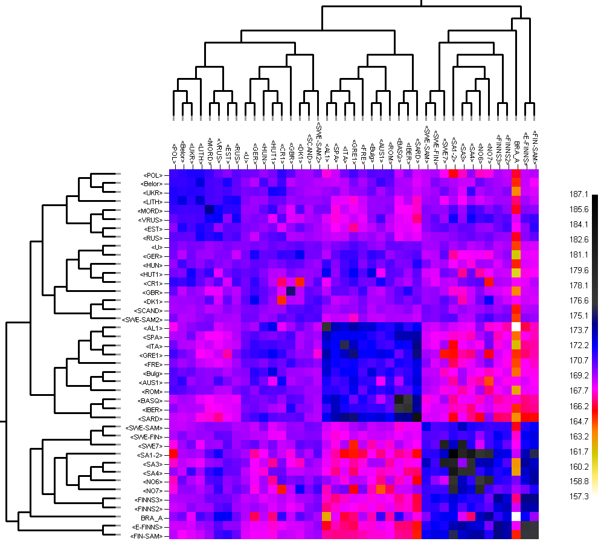
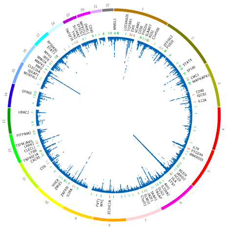
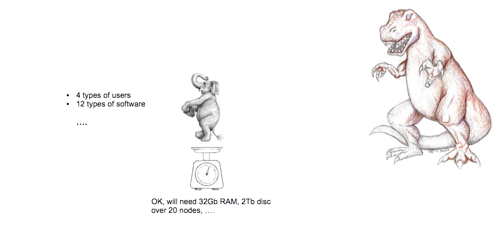

Big Data
Problems and Pipelines
Storage
Hardware
Storage
Software
Analysis & Visualisation
 

Analysis & Visualisation

Analysis & Visualisation

Analysis & Visualisation

Pipelines
Volume, Velocity, Variety
It is a 2-gear problem:
- Exhaustive, rigorous back-end
- Meaningful and effective visualisation
An example from Stat. Genetics
Multiple Sclerosis
International project (1 US team, 2 UK teams)
Collected BIG DATA for 45,000 people from around the world
An example from Stat. Genetics
Multiple Sclerosis
An example from Stat. Genetics
Multiple Sclerosis
An example from Stat. Genetics
Multiple Sclerosis
The Enemy of 'Big' is 'Bigger'
